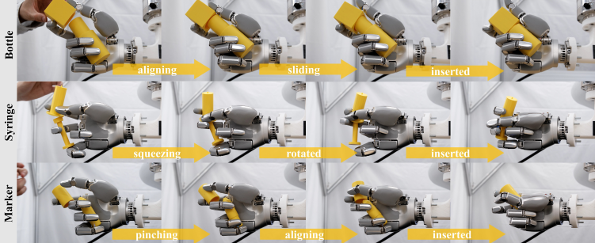
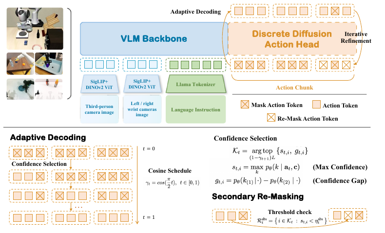
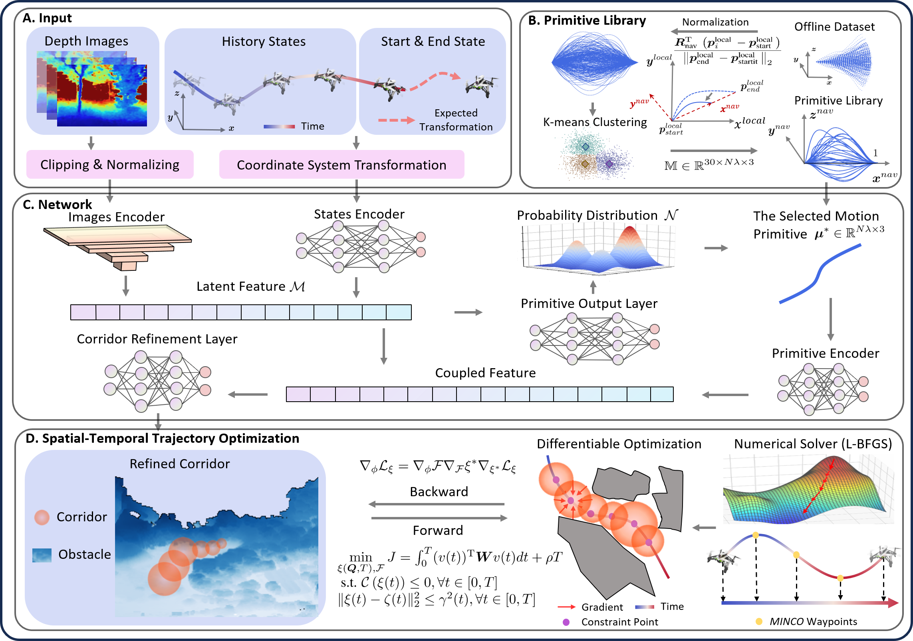

Assembling Two Parts in One Hand
Conference on Robot Learning (CoRL), 2026. Accepted.
Hi, I'm Liuao Pei. I am currently a second-year Ph.D. student at The University of Hong Kong, fortunately supervised by Prof. Ping Luo at MMLAB@HKU.
* Equal contribution.

Conference on Robot Learning (CoRL), 2026. Accepted.

International Conference on Machine Learning (ICML), 2026.

IEEE Robotics and Automation Letters (RA-L), 2025.
IEEE Transactions on Intelligent Transportation Systems (TITS), 25(2):1797–1814, 2024.
First published online in 2023.
IEEE Robotics and Automation Letters (RA-L), 2023.
IEEE International Conference on Robotics and Automation (ICRA), 2023.